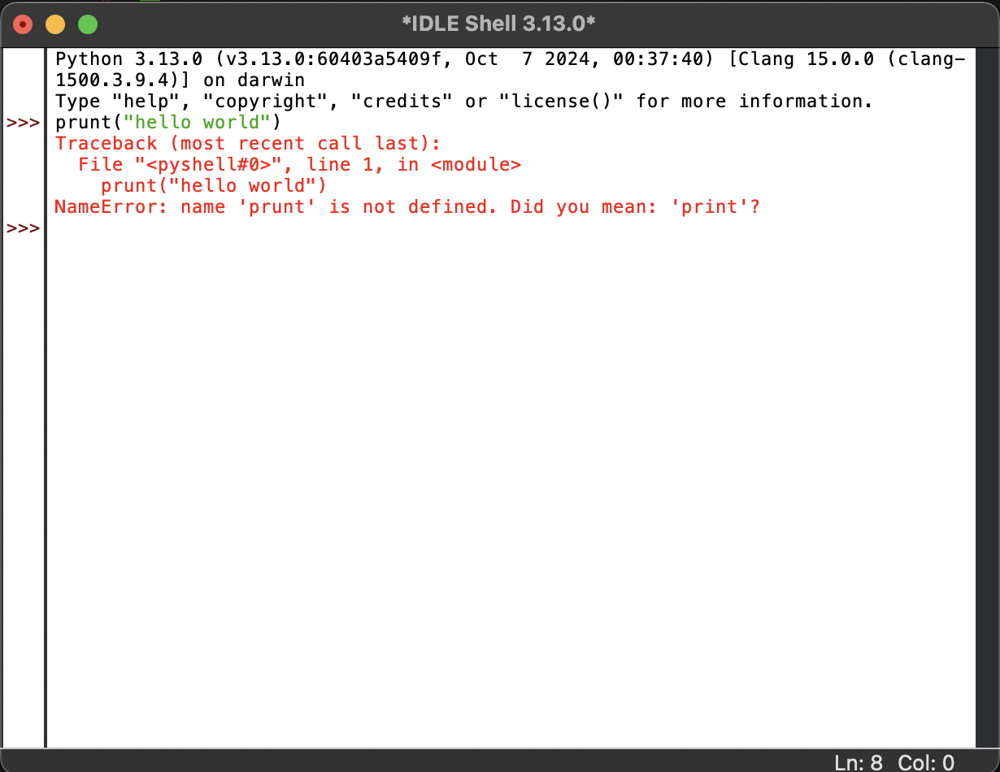
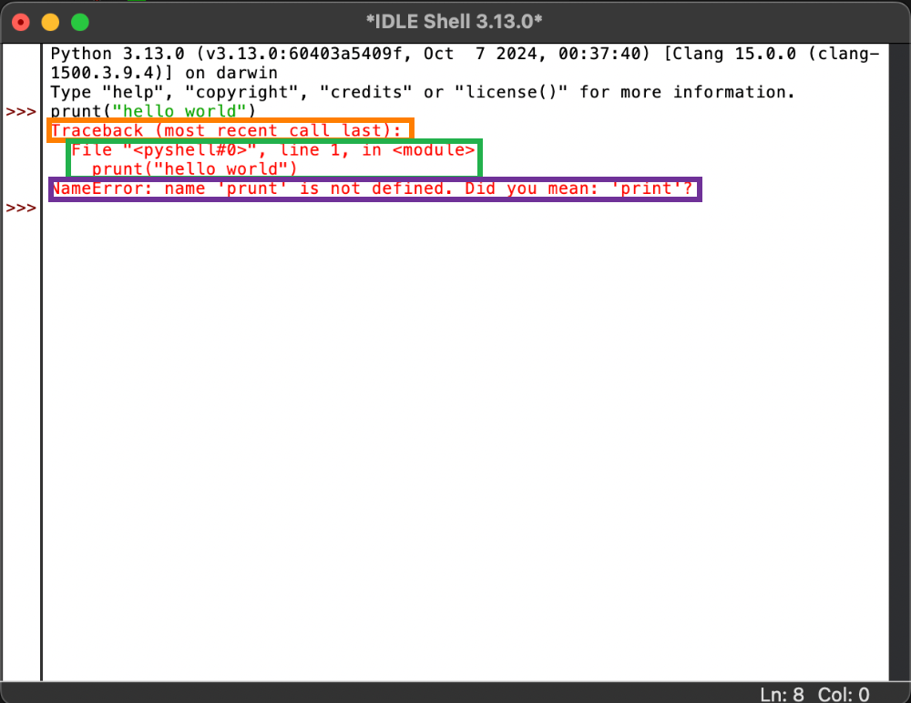

Basic Introduction to Python
Ok, now that we have the IDLE app open you should be seeing this window:

The window you are currently seeing is called the Shell 🐚. This is where you can see the output of your code, this includes errors 😵. Whenever something goes wrong in your code a big red message that looks something like this will appear in the Shell:
Now these might look a bit confusing 😵💫 at first but they're not all that complicated. In a way, its actually just Python trying to give you a hint 💡. Let's brake the error down into parts so its easer to understand.
Now unlike normal text, it's better to read errors from the bottom up ☝️ and we'll explain why in a minute. Let's take a look at the last line of the error 👀, the one in purple 🟣. This line is the actual error and it's what tells you what's gone wrong, in this case the word print was misspelt and you'll notice that the error helps us and asks if we meant to type print which in this case, we did 😄.
The next part, as to say the green one 🟢, shows us two things: it tells us the file 📄 the error ocurred in along with the line it ocurred in and it shows us said line. Sometimes it even underlines the part of the line that caused the error with little arrows
Finally, let's take a look at the first part, the one in orange 🟠. Now since this file 📄 was run directly from the shell this part is just one line, but if you were to run a Python file, all of its parent directories would be listed above the line that says Traceback. Parent directory means the folder 📂 that a file is in. E.G. If you had a Python file that was inside a lot of folders: Folder1 > Folder2 > Folder3 > python_file.py, whenever you get an error in python_file.py Folder1, 2 and 3 will be listed above Traceback. Most recent call last means that the furthest layer/folder, in this case Folder1, will be at the top and the closest layer/folder, Folder3, will be just above Traceback.
Some times the list of parent directories can get quite long and it's tiring to read through all of it and thats why its better to read errors from the bottom up 😉.